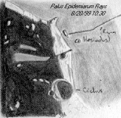
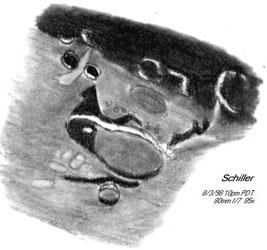
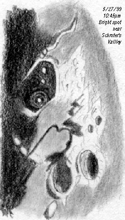

|  |
As far as I can tell, there are no hot moon events this month. We miss an Aldebaran occultation by being on the wrong part of the planet. There are the usual "moon near planet" events.
Librations are generally unfavorable for any unusual views. The northern and southern librations are fairly strong, but not that close to full, when they show to best effect. East and west occur when the limbs are dark.
So what's left? Elevation, of course! Maximum height in the sky. Over 73 degrees up, to be nitpicky, which is wayyy up. Less atmosphere, better seeing... incredible views.
But when?
The answer is basically around the 15th of the month, when the moon will be starting to seriously approach full, and many people are thinking about not looking.
A serious mistake.
|  |
(Also bear in mind that there are plenty of other worthwhile targets on the western quadrant, but we're only going to talk about these two right now...)
If I got the numbers right, showtime starts about 8pm on the 14th. You can start an hour earlier and it will make little difference, but this is the prime time.
At that point, the terminator will be cruising through Palus Epidemarium, the "Marsh Of Disease." Not a very attractive name, but perhaps a little descriptive because of the "bad skin" look of the area.
Why bad? Because I also call this area "Rilleville." It contains the incomparable Rimae Ramsden, a crosshatch filigree across most of the floor of the marsh.
They are fine and rich in detail, yet not too difficult: I've nailed them all in fine seeing with a 4.5-inch reflector. And if we get any cooperation from the sky, this should be fine seeing indeed.
You should also be able to trace Rima Hesiodus from the eastern half of Palus Epidemarium running eastward through maria, valleys, craters and mountains all the way to Hesiodus itself, over 15 degrees of the moon's surface!
During the evening, the front edge of Mare Humorum should also be coming into the light, showing the ends of the Rimae Hippalus clawmarks. These are really easy rilles, visible in practically any scope.
|  |
Then you should be able to see why I call them clawmarks. They look as if some huge bird had drawn its talons in an arc across the opening of Mare Humorum... and there are plenty of other rilles around as well: just pay attention to the edges of the Mare especially. They should show in just about any scope.
But be sure to stop for a long visit at the spectacular ruined crater Gassendi.
Again, rilles. But this time they are spread all around the floor of the crater, along with a fascinating complex central peak.
There's plenty to see inside the old monster, but the rim also shows an interesting effect where it dips into the Mare and disappears - apparently melted by the flows of lava that formed Humorum.
Please take the time both nights (and the nights before and after) to inspect the entire terminator zone, carefully. This is some of the best stuff on the moon, and this is as good a shot as you'll get at it any time during the year.
If there is any one thing I'd like to get across this month, it's that the area of Humorum/Epidemarium is prime moon real estate, to be looked at whenever possible.
For some reason (perhaps that we are approaching full, maybe just because of all the silly names in this area) they are overlooked even by experienced loonies.
A true tragedy.
Get to know the western edge; in many ways its the best the moon has to offer.
Want a huge bonus? Keep an eye out for Schroter's Valley up north. See if you can see the cobra, complete with head... might take another night.